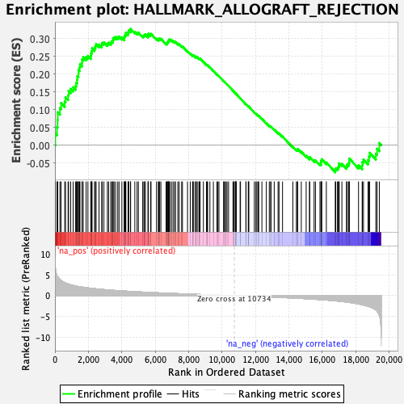
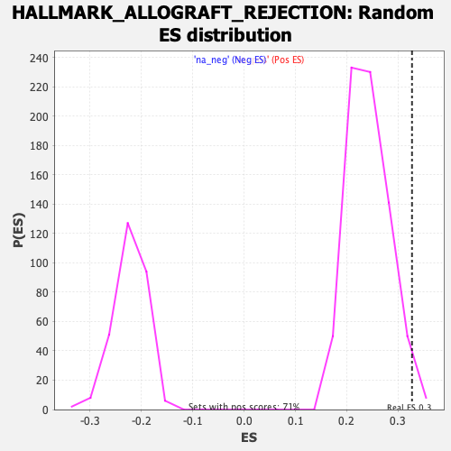

| | | Dataset | PFS |
| Phenotype | NoPhenotypeAvailable |
| Upregulated in class | na_pos |
| GeneSet | HALLMARK_ALLOGRAFT_REJECTION |
| Enrichment Score (ES) | 0.32708892 |
| Normalized Enrichment Score (NES) | 1.3535041 |
| Nominal p-value | 0.025280898 |
| FDR q-value | 0.22248486 |
| FWER p-Value | 0.713 |
Table: GSEA Results Summary

Fig 1: Enrichment plot: HALLMARK_ALLOGRAFT_REJECTION
Profile of the Running ES Score & Positions of GeneSet Members on the Rank Ordered List
| SYMBOL | RANK IN GENE LIST | RANK METRIC SCORE | RUNNING ES | CORE ENRICHMENT | | 1 | NCR1 | 19 | 7.017 | 0.0326 | Yes |
| 2 | IL16 | 120 | 4.904 | 0.0510 | Yes |
| 3 | LCP2 | 157 | 4.592 | 0.0711 | Yes |
| 4 | IGSF6 | 167 | 4.552 | 0.0925 | Yes |
| 5 | CAPG | 298 | 3.947 | 0.1047 | Yes |
| 6 | CD79A | 367 | 3.695 | 0.1189 | Yes |
| 7 | KRT1 | 586 | 3.139 | 0.1226 | Yes |
| 8 | IL15 | 631 | 3.054 | 0.1350 | Yes |
| 9 | TPD52 | 787 | 2.832 | 0.1405 | Yes |
| 10 | CXCR3 | 818 | 2.789 | 0.1524 | Yes |
| 11 | SRGN | 944 | 2.639 | 0.1585 | Yes |
| 12 | HCLS1 | 1090 | 2.481 | 0.1629 | Yes |
| 13 | FLNA | 1237 | 2.343 | 0.1666 | Yes |
| 14 | ELF4 | 1274 | 2.306 | 0.1758 | Yes |
| 15 | CD1D | 1323 | 2.270 | 0.1842 | Yes |
| 16 | CCND2 | 1340 | 2.253 | 0.1942 | Yes |
| 17 | CXCL13 | 1405 | 2.201 | 0.2014 | Yes |
| 18 | IRF7 | 1410 | 2.196 | 0.2117 | Yes |
| 19 | CCR1 | 1474 | 2.157 | 0.2188 | Yes |
| 20 | SPI1 | 1499 | 2.144 | 0.2278 | Yes |
| 21 | RPS9 | 1620 | 2.073 | 0.2316 | Yes |
| 22 | CD86 | 1624 | 2.071 | 0.2413 | Yes |
| 23 | ST8SIA4 | 1692 | 2.032 | 0.2476 | Yes |
| 24 | DYRK3 | 1865 | 1.937 | 0.2480 | Yes |
| 25 | IL12B | 1974 | 1.882 | 0.2514 | Yes |
| 26 | ZAP70 | 2145 | 1.793 | 0.2512 | Yes |
| 27 | CCR5 | 2165 | 1.784 | 0.2588 | Yes |
| 28 | TLR1 | 2202 | 1.765 | 0.2654 | Yes |
| 29 | NME1 | 2221 | 1.754 | 0.2729 | Yes |
| 30 | WAS | 2370 | 1.698 | 0.2734 | Yes |
| 31 | IL18 | 2418 | 1.674 | 0.2790 | Yes |
| 32 | SOCS1 | 2462 | 1.655 | 0.2847 | Yes |
| 33 | TIMP1 | 2638 | 1.582 | 0.2832 | Yes |
| 34 | NPM1 | 2801 | 1.516 | 0.2821 | Yes |
| 35 | IRF4 | 2829 | 1.507 | 0.2879 | Yes |
| 36 | CRTAM | 2930 | 1.471 | 0.2898 | Yes |
| 37 | CSF1 | 3138 | 1.398 | 0.2858 | Yes |
| 38 | BCL10 | 3209 | 1.377 | 0.2888 | Yes |
| 39 | CD40 | 3343 | 1.337 | 0.2883 | Yes |
| 40 | BCL3 | 3388 | 1.325 | 0.2924 | Yes |
| 41 | CTSS | 3464 | 1.305 | 0.2948 | Yes |
| 42 | TAPBP | 3479 | 1.300 | 0.3003 | Yes |
| 43 | IL13 | 3539 | 1.278 | 0.3033 | Yes |
| 44 | EGFR | 3633 | 1.252 | 0.3045 | Yes |
| 45 | CCL2 | 3758 | 1.213 | 0.3039 | Yes |
| 46 | FGR | 3835 | 1.194 | 0.3057 | Yes |
| 47 | TAP1 | 4005 | 1.144 | 0.3025 | Yes |
| 48 | EIF3D | 4148 | 1.111 | 0.3005 | Yes |
| 49 | IL2RB | 4152 | 1.110 | 0.3056 | Yes |
| 50 | CFP | 4187 | 1.099 | 0.3091 | Yes |
| 51 | IL7 | 4232 | 1.089 | 0.3121 | Yes |
| 52 | GZMA | 4243 | 1.086 | 0.3168 | Yes |
| 53 | JAK2 | 4380 | 1.055 | 0.3148 | Yes |
| 54 | NLRP3 | 4396 | 1.051 | 0.3190 | Yes |
| 55 | LY86 | 4416 | 1.046 | 0.3231 | Yes |
| 56 | THY1 | 4521 | 1.018 | 0.3226 | Yes |
| 57 | GPR65 | 4529 | 1.016 | 0.3271 | Yes |
| 58 | ACHE | 4780 | 0.959 | 0.3188 | No |
| 59 | PTPN6 | 4915 | 0.933 | 0.3163 | No |
| 60 | NCK1 | 4992 | 0.920 | 0.3168 | No |
| 61 | CCR2 | 5251 | 0.865 | 0.3076 | No |
| 62 | GBP2 | 5322 | 0.852 | 0.3081 | No |
| 63 | GZMB | 5356 | 0.844 | 0.3104 | No |
| 64 | ELANE | 5410 | 0.832 | 0.3116 | No |
| 65 | INHBA | 5567 | 0.802 | 0.3074 | No |
| 66 | IL2RA | 5583 | 0.799 | 0.3105 | No |
| 67 | GALNT1 | 5589 | 0.798 | 0.3140 | No |
| 68 | CD74 | 5724 | 0.773 | 0.3108 | No |
| 69 | IL12A | 5749 | 0.770 | 0.3133 | No |
| 70 | CCL5 | 6077 | 0.709 | 0.2998 | No |
| 71 | GLMN | 6187 | 0.688 | 0.2974 | No |
| 72 | CD47 | 6212 | 0.683 | 0.2995 | No |
| 73 | CCND3 | 6268 | 0.674 | 0.2998 | No |
| 74 | F2 | 6338 | 0.661 | 0.2994 | No |
| 75 | BRCA1 | 6650 | 0.609 | 0.2863 | No |
| 76 | LIF | 6708 | 0.599 | 0.2862 | No |
| 77 | STAT1 | 6714 | 0.598 | 0.2888 | No |
| 78 | IFNGR2 | 6758 | 0.592 | 0.2894 | No |
| 79 | CD7 | 6776 | 0.588 | 0.2914 | No |
| 80 | ITGAL | 6787 | 0.587 | 0.2937 | No |
| 81 | FCGR2B | 6810 | 0.584 | 0.2953 | No |
| 82 | B2M | 6827 | 0.580 | 0.2973 | No |
| 83 | IL4R | 6875 | 0.571 | 0.2976 | No |
| 84 | CXCL9 | 6972 | 0.553 | 0.2953 | No |
| 85 | ETS1 | 7067 | 0.539 | 0.2930 | No |
| 86 | IL2RG | 7158 | 0.522 | 0.2908 | No |
| 87 | CD28 | 7208 | 0.515 | 0.2908 | No |
| 88 | CD96 | 7354 | 0.491 | 0.2856 | No |
| 89 | RIPK2 | 7433 | 0.480 | 0.2839 | No |
| 90 | TNF | 7582 | 0.454 | 0.2784 | No |
| 91 | LCK | 7630 | 0.447 | 0.2781 | No |
| 92 | MAP3K7 | 7932 | 0.402 | 0.2645 | No |
| 93 | IL10 | 8097 | 0.378 | 0.2578 | No |
| 94 | AKT1 | 8237 | 0.360 | 0.2524 | No |
| 95 | ITK | 8253 | 0.358 | 0.2533 | No |
| 96 | EIF5A | 8306 | 0.350 | 0.2523 | No |
| 97 | IKBKB | 8413 | 0.333 | 0.2484 | No |
| 98 | CD3D | 8446 | 0.329 | 0.2483 | No |
| 99 | SOCS5 | 8457 | 0.328 | 0.2494 | No |
| 100 | MMP9 | 8550 | 0.316 | 0.2461 | No |
| 101 | CDKN2A | 8640 | 0.304 | 0.2430 | No |
| 102 | UBE2D1 | 8643 | 0.303 | 0.2443 | No |
| 103 | IL9 | 8687 | 0.296 | 0.2435 | No |
| 104 | FASLG | 8883 | 0.266 | 0.2347 | No |
| 105 | INHBB | 9068 | 0.239 | 0.2264 | No |
| 106 | BCAT1 | 9111 | 0.233 | 0.2253 | No |
| 107 | IL1B | 9136 | 0.230 | 0.2252 | No |
| 108 | EIF3A | 9272 | 0.211 | 0.2192 | No |
| 109 | PTPRC | 9480 | 0.179 | 0.2094 | No |
| 110 | CCL11 | 9692 | 0.149 | 0.1992 | No |
| 111 | CD247 | 9752 | 0.140 | 0.1968 | No |
| 112 | CCL19 | 9814 | 0.129 | 0.1943 | No |
| 113 | TLR6 | 10094 | 0.090 | 0.1803 | No |
| 114 | RPS3A | 10107 | 0.089 | 0.1801 | No |
| 115 | IFNGR1 | 10168 | 0.081 | 0.1774 | No |
| 116 | HIF1A | 10246 | 0.068 | 0.1737 | No |
| 117 | RPL39 | 10299 | 0.062 | 0.1713 | No |
| 118 | GCNT1 | 10390 | 0.048 | 0.1669 | No |
| 119 | TRAF2 | 10651 | 0.012 | 0.1535 | No |
| 120 | KLRD1 | 10711 | 0.003 | 0.1505 | No |
| 121 | TRAT1 | 10723 | 0.002 | 0.1499 | No |
| 122 | CARTPT | 10797 | -0.008 | 0.1462 | No |
| 123 | IL11 | 10821 | -0.011 | 0.1450 | No |
| 124 | PRF1 | 10832 | -0.013 | 0.1446 | No |
| 125 | IFNAR2 | 10850 | -0.016 | 0.1438 | No |
| 126 | CD2 | 11080 | -0.047 | 0.1322 | No |
| 127 | RPL3L | 11104 | -0.050 | 0.1312 | No |
| 128 | UBE2N | 11426 | -0.096 | 0.1151 | No |
| 129 | DEGS1 | 11434 | -0.097 | 0.1152 | No |
| 130 | EIF3J | 11567 | -0.116 | 0.1089 | No |
| 131 | IL12RB1 | 11586 | -0.119 | 0.1085 | No |
| 132 | TGFB1 | 11600 | -0.121 | 0.1084 | No |
| 133 | EREG | 11932 | -0.171 | 0.0922 | No |
| 134 | RPS19 | 12025 | -0.188 | 0.0883 | No |
| 135 | ABI1 | 12084 | -0.196 | 0.0862 | No |
| 136 | CCL22 | 12154 | -0.206 | 0.0837 | No |
| 137 | CD8A | 12195 | -0.212 | 0.0826 | No |
| 138 | TAP2 | 12384 | -0.240 | 0.0740 | No |
| 139 | STAB1 | 12648 | -0.289 | 0.0618 | No |
| 140 | F2R | 12826 | -0.315 | 0.0542 | No |
| 141 | IL4 | 12909 | -0.329 | 0.0515 | No |
| 142 | IL2 | 12930 | -0.334 | 0.0521 | No |
| 143 | RPL9 | 13122 | -0.366 | 0.0440 | No |
| 144 | MTIF2 | 13351 | -0.401 | 0.0341 | No |
| 145 | CD3G | 13409 | -0.411 | 0.0331 | No |
| 146 | IRF8 | 13619 | -0.444 | 0.0244 | No |
| 147 | CD8B | 14236 | -0.561 | -0.0047 | No |
| 148 | CSK | 14447 | -0.599 | -0.0127 | No |
| 149 | CD4 | 14505 | -0.609 | -0.0127 | No |
| 150 | IL18RAP | 14529 | -0.616 | -0.0110 | No |
| 151 | CD3E | 14741 | -0.662 | -0.0187 | No |
| 152 | CCL7 | 15032 | -0.724 | -0.0302 | No |
| 153 | PRKCB | 15231 | -0.770 | -0.0368 | No |
| 154 | FAS | 15244 | -0.774 | -0.0337 | No |
| 155 | LTB | 15506 | -0.838 | -0.0432 | No |
| 156 | HDAC9 | 15589 | -0.861 | -0.0433 | No |
| 157 | TLR2 | 15858 | -0.935 | -0.0527 | No |
| 158 | IL6 | 15925 | -0.952 | -0.0515 | No |
| 159 | ICOSLG | 15926 | -0.952 | -0.0470 | No |
| 160 | LYN | 15943 | -0.956 | -0.0432 | No |
| 161 | EIF4G3 | 15965 | -0.964 | -0.0397 | No |
| 162 | MBL2 | 16240 | -1.049 | -0.0488 | No |
| 163 | PSMB10 | 16773 | -1.239 | -0.0704 | No |
| 164 | CCL13 | 16800 | -1.248 | -0.0657 | No |
| 165 | ITGB2 | 16904 | -1.286 | -0.0649 | No |
| 166 | ICAM1 | 16957 | -1.306 | -0.0613 | No |
| 167 | TGFB2 | 16991 | -1.323 | -0.0567 | No |
| 168 | PF4 | 17008 | -1.328 | -0.0512 | No |
| 169 | NOS2 | 17171 | -1.395 | -0.0528 | No |
| 170 | CD80 | 17443 | -1.521 | -0.0596 | No |
| 171 | CD40LG | 17491 | -1.546 | -0.0546 | No |
| 172 | MAP4K1 | 17577 | -1.595 | -0.0513 | No |
| 173 | IL27RA | 17606 | -1.609 | -0.0451 | No |
| 174 | STAT4 | 17614 | -1.612 | -0.0377 | No |
| 175 | NCF4 | 18166 | -1.980 | -0.0567 | No |
| 176 | SIT1 | 18385 | -2.168 | -0.0576 | No |
| 177 | IFNG | 18396 | -2.188 | -0.0476 | No |
| 178 | MRPL3 | 18463 | -2.256 | -0.0402 | No |
| 179 | TLR3 | 18736 | -2.555 | -0.0420 | No |
| 180 | PRKCG | 18792 | -2.613 | -0.0324 | No |
| 181 | ACVR2A | 18830 | -2.669 | -0.0215 | No |
| 182 | C2 | 19202 | -3.424 | -0.0243 | No |
| 183 | ABCE1 | 19275 | -3.726 | -0.0101 | No |
| 184 | APBB1 | 19411 | -4.788 | 0.0058 | No |
Table: GSEA details [plain text format]

Fig 2: HALLMARK_ALLOGRAFT_REJECTION: Random ES distribution
Gene set null distribution of ES for HALLMARK_ALLOGRAFT_REJECTION